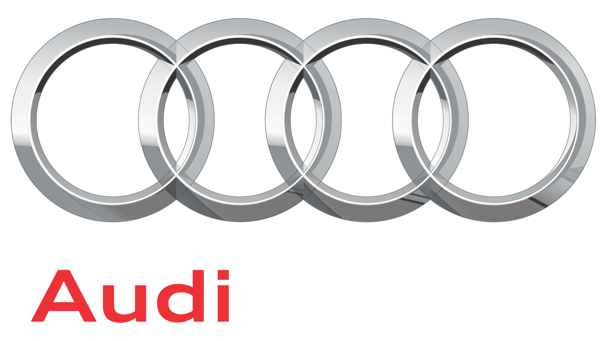
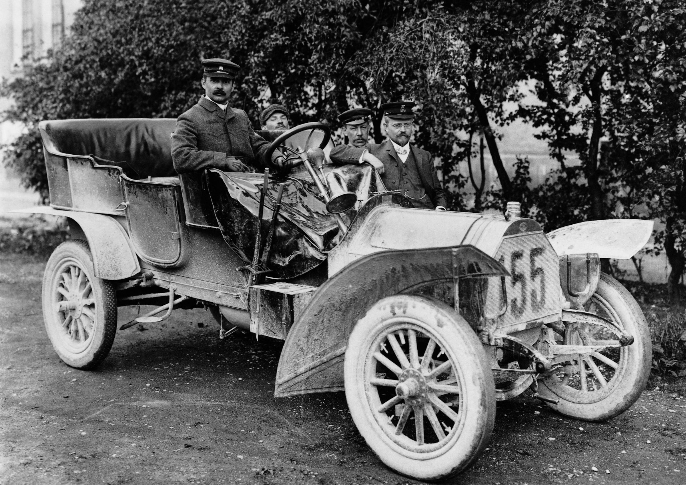
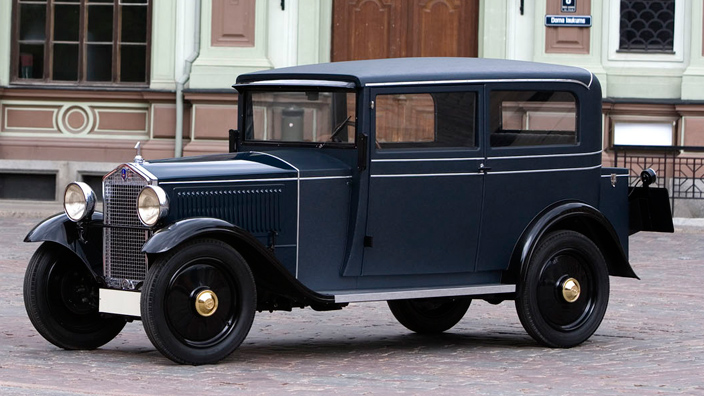
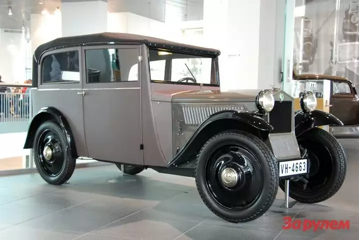

Audi AG ([ˈɑʊdɪ], в переводе с лат.— «слушай») — немецкаяравтомобилестроительная компания в составе концерна Volkswagen Group,
специализирующаяся на выпуске автомобилей под маркой Audi. Штаб-квартира расположена в городе Ингольштадт (Германия).
Девиз — Vorsprung durch Technik (с немецкого. — «Прогресс через технологии»). Объём производства в 2016 году составил около 1 903 259 автомобилей

Август Хорьх организовал в 1899 году, а после того, как кредиторы отстранили его от дел, в 1909 году была организована компания
Audi Automobil-Werke, что переводится как «Автомобильный завод Ауди». А в 1910 году был выпущен первый автомобиль. В переводе с немецкого
Хорьх (нем. Horch) означает «слушай».

В 1928 году эта марка была выкуплена мотопроизводителем DKW, и в 1931 году состоялся дебют автомобиля с передним приводом, DKW F1.
Содействовал этому мировой экономический кризис, начавшийся в 1929 году. Дело в том, что автомобили с большим объёмом двигателя
перестали пользоваться спросом ввиду всеобщего безденежья. И тогда глава Audi поручил разработать
компактный автомобиль с передним приводом и назвали ега audi type P
